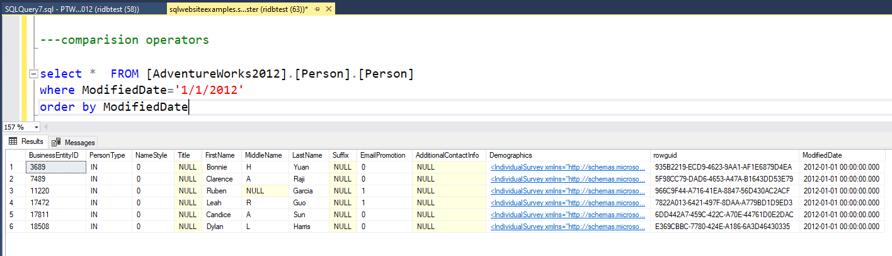
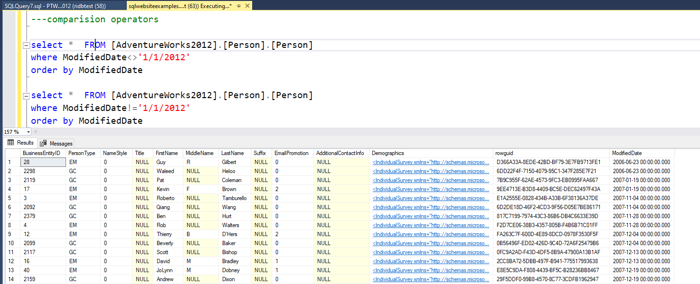
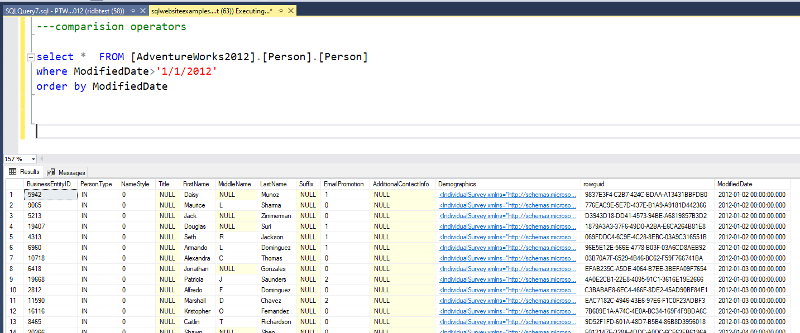
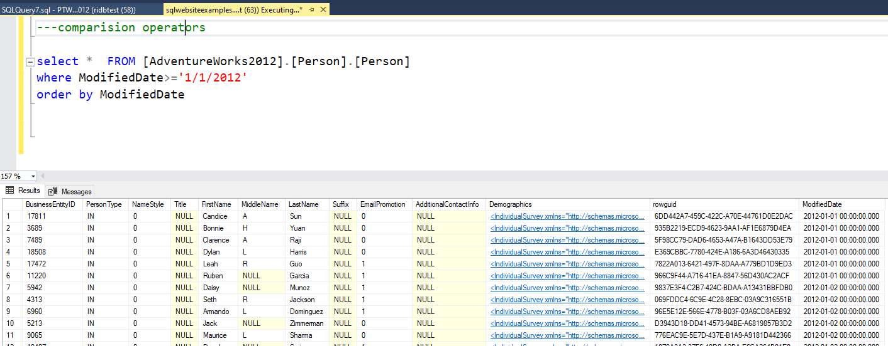
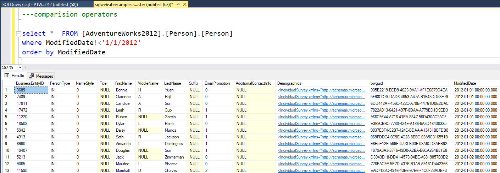
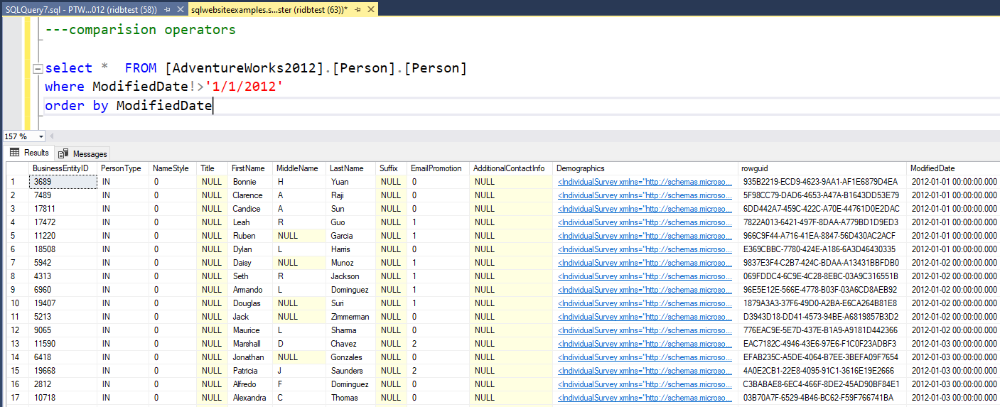

Examples on how we use these Operators
Here are some Screenshots with real time results of how you can use the Operators. If used in correct way , they can help is powerful SQL transformations , data mining , data analysis.
Equal to[=]
Not equal[!=] or [<>]
Greater than[>]/[>=]
Less than[<]/[<=]
Not less than[!<] or [!>]
We will use [AdventureWorks2012].[Person].[Person] table for this Operator
SQL EQUAL TO Operator
Equal to[=] operator can be used in WHERE clause or CASE statement etc. It makes sure the value is equal to value we need.
Notice below we check to make sure for data where modified data is 1/1/2012
Checks if the values of two operands are equal or not, if yes then condition becomes true.
We will use [AdventureWorks2012].[Person].[Person] table for this Operator
SQL NOT EQUAL TO Operator
Not equal[!=]/[<>] operator can be used in WHERE clause or CASE statement etc. It makes sure the value is equal to value we need.
Notice below we check to make sure for data where modified data is not equal to 1/1/2012. Both symbols work the same way.
Checks if the values of two operands are equal or not, if values are not equal then condition becomes true.
We will use [AdventureWorks2012].[Person].[Person] table for this Operator
SQL GREATER THAN/ GREATER THAN EQUAL TO Operator
Greater than[>] operator can be used in WHERE clause or CASE statement etc. It makes sure the value is greater than the value we provide.
Notice below we check to make sure for data where modified data is greater than 1/1/2012
Greater than equal to [>=] operator can be used in WHERE clause or CASE statement etc. It makes sure the value is greater than or equal to the value we provide.
Notice below we check to make sure for data where modified data is greater than or equal to 1/1/2012
We will use [AdventureWorks2012].[Person].[Person] table for this Operator
SQL LESS THAN/ LESS THAN EQUAL TO Operator
Less than[<] operator can be used in WHERE clause or CASE statement etc. It makes sure the value is less than the value we provide.
Notice below we check to make sure for data where modified data is less than 1/1/2012
Less than equal to [<=] operator can be used in WHERE clause or CASE statement etc. It makes sure the value is less than or equal to the value we provide.
Notice below we check to make sure for data where modified data is less than or equal to 1/1/2012
We will use [AdventureWorks2012].[Person].[Person] table for this Operator
SQL NOT LESS THAN / NOT GREATER THAN Operator
Not less than[!<] operator can be used in WHERE clause or CASE statement etc. It makes sure the value is not less than the value we provide.
Notice below we check to make sure its false for data where modified data is less than 1/1/2012
That means it will still pull cases where modified data is 1/1/2012
Not greater than[!>] operator can be used in WHERE clause or CASE statement etc. It makes sure the value is not greater than or equal to the value we provide.
Notice below we check to make sure its false for data where modified data is greater than to 1/1/2012
That means it will still pull cases where modified data is 1/1/2012
